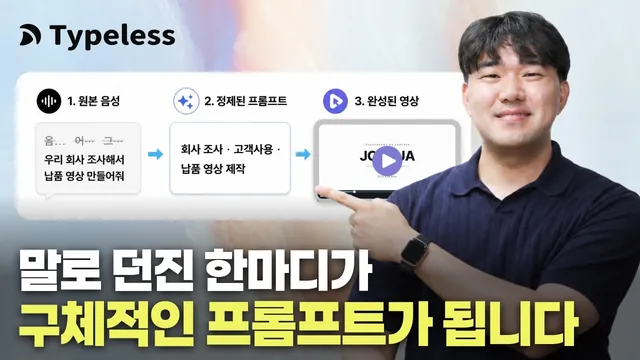

클로드 디자인 영상 제작부터 인스타 카드뉴스까지, 음성 입력으로 만든 실전 사례 3가지 (feat. Typeless)

원본 영상 보기 →
- 프롬프트의 질이 결과의 질을 결정해요
- Claude가 내 파일을 기반으로 움직입니다
- AI가 못 하는 부분은 다른 도구로 메우세요
한 줄 요약
음성 입력 도구 Typeless(타임리스)로 두서없이 말만 해도 300자짜리 구조화된 프롬프트가 만들어져요. 이걸 Claude Code와 Claude 앱에 물려 제안서·홍보 영상·블로그 자동화·인스타 카드뉴스를 실제로 만들어낸 빌더 조쉬의 실전 사례입니다.
전체 내용 정리
타이핑 대신 말하기가 왜 빠를까요
발표자는 프롬프트를 손으로 치지 않고 거의 전부 말로 처리합니다.
조용한 환경에서는 타이핑도 유용하지만, 무거운 작업을 시키거나 맥락을 많이 전달해야 할 때는 말하는 쪽이 훨씬 빠르다는 거예요.
Typeless는 말한 내용을 그대로 받아쓰는 데 그치지 않습니다. 두서없이 쏟아낸 발화를 정리해 구체적인 프롬프트로 바꿔 줘요.
"카드뉴스 알아서 잘 다섯 장만" 같이 두루뭉술하게 던지면 결과도 두루뭉술하죠. 그런데 순서 없이 길게 말해도 Typeless가 맥락을 잡아 정돈된 프롬프트로 만들어 주니 결과물의 질이 달라집니다.
사례 1: 제안서 쓰기, 타이핑 vs 음성
왼쪽 화면은 손으로 타이핑, 오른쪽은 음성으로 같은 작업을 시켜 비교했어요.
주제는 "콘텐츠 마케팅 가속화를 위한 AX 추진 체계"를 정리해 달라는 다소 모호한 요청이었습니다. 사내 AX 체계 정리부터 시작해 앞으로 고객사 프로젝트를 사내에서 어떻게 추진할지까지 담고, 개발 한 명·기획 한 명 구성으로 4주간 3개 컨설팅 플랜을 짜는 내용이었고요.
결과가 갈렸습니다. 발화량 자체는 비슷했지만 걸린 시간은 음성 쪽이 극적으로 짧았어요. 타이핑한 왼쪽은 정리가 덜 되고 말이 오락가락했으며 요약도 대충 들어간 반면, 음성으로 넣은 오른쪽은 오타가 적고 더 정제된 형태로 정리됐습니다.
사례 2: Claude Design으로 납품용 홍보 영상
Claude Design은 최근 개편으로 슬라이드와 모바일 앱 디자인을 넘어 동영상, 애니메이션, 3D 오브젝트, 논문, 다이어그램까지 만들 수 있게 됐어요. 발표자는 그중 애니메이션에 주목해, 프레젠테이션을 동영상으로 만드는 용도로 활용합니다.
맥에서 펑션 키를 눌러 Typeless를 띄우고 이렇게 말했어요.
"회사 소개를 홈페이지에서 조사한 뒤, 홈페이지의 내용과 폰트·디자인까지 참고해 고객사 납품용 동영상을 만들어 달라. 앞으로 어떻게 AX를 도와줄 수 있을지에 대한 내러티브를 짜서 페이지별로 만들고 자막도 추가해 달라."
1차 결과가 나온 뒤에는 수정 요청을 다시 음성으로 넣었습니다. "이미지·도식화가 부족하니 보완하고, 속도감을 높이고, 회사 이름을 잘 드러내고, 고객사 로고가 있으면 많이 포함해 달라"고요.
사례 3: 매일 아침 블로그 초안 자동 발행
커넥터는 외부 도구를 Claude에 연결해 생산성을 높이는 기능이에요. 여기서는 블로그 자동화를 시연합니다.
프롬프트는 이랬어요.
"매일 아침 9시마다 블로그에 회사 관련 최신 소식이나 뜨는 키워드를 바탕으로 SEO가 잘 걸리도록 포스팅 초안을 작성하고, 팩트 검증을 거쳐 충실한 초안을 만들어 달라. 먼저 지금 초안을 하나 작성해 검증받게 해 달라."
Claude가 블로그에 리스트 태그를 사용하겠다고 하면 항상 허용을 누르고 자동화를 시작하면 됩니다.
첫 초안은 "우리 회사가 어떻게 일하는가"를 주제로, 회사가 하는 네 가지 일과 일하는 방식, 함께 일하는 사람들 등을 다뤘고 링크로 열어 확인할 수 있었어요. 이후 "글 분량이 SEO에 최적화됐는지 점검하고, AX가 무엇인지와 회사가 AX 기준을 따르고 있다는 증거·입증 자료를 보완해 달라"는 프롬프트로 초안을 강화했습니다.
실제로 "제조 중소기업 AX, 하반기에 무엇이 달라지나 — 바우처 실행 가이드" 같은 포스팅까지 데이터 수집과 출처 표기를 곁들여 완성됐어요.
발표자의 추천이 실용적입니다. SEO 대행이나 블로그 대행에 쓸 예산이 없는 대표라면, Claude로 실제 데이터를 모아 SEO 최적화된 글을 아침 9시마다 하나씩 만들게 하라고요.
사례 4: 멀티 에이전트로 인스타 카드뉴스
카드뉴스는 한 AI가 이미지 제작·글쓰기·검수를 A부터 Z까지 다 하기 어려워요. 역할별로 에이전트를 나누는 편이 낫습니다.
발표자는 '브랜드' 폴더에 Claude 캐릭터 이미지와 톤앤매너 레퍼런스 이미지를 넣어 두고, 맥락이 담긴 폴더를 Claude Code에 끌어온 뒤 음성으로 지시했어요.
"멀티 에이전트로 만들고, 레퍼런스를 분석해 색 조합·여백·폰트 크기 비율까지 파악한 뒤 카드뉴스를 만들되, 카드는 8장을 넘기지 말고 첫 장은 후킹, 후반부에는 CTA를 넣어라. 기획·제작·검수 에이전트를 두고, 검수 에이전트는 앞단 가이드를 벗어나면 엄격히 준수시키고 루프를 다시 돌려라. 중간에 다 물어보지 말고 끝까지 한 번에 가되, 우선 에이전트 팀부터 추천해라."
두서없이 말했을 뿐인데 Typeless가 1·2·3 항목과 에이전트 팀 구성 예시까지 갖춘 구체적인 프롬프트로 정리해 줬습니다.
결과로 레퍼런스 분석(타이포그래피·여백 레이아웃)과 플래너·프로듀서·인스펙터 3개 에이전트, 이를 실행하는 파이프라인 스킬이 만들어졌어요. '북튜브' 채널을 벤치마킹한 소개 카드뉴스가 인스타그램에 바로 올릴 만한 퀄리티로 나왔고요.
다만 이미지 제작은 Claude가 100% 잘하지 못해서, OpenAI에서 API 키를 따로 발급받아 GPT image 2.0 모델로 카드뉴스를 생성하도록 추가 설정을 해 둔 상태였습니다. 완성된 카드뉴스는 자동 배포까지 가능해요.
Typeless 앱과 보안
Typeless는 펑션 키로 모든 페이지에서 음성 받아쓰기 모드를 띄우고, 펑션+시프트로 번역이나 질문 같은 AI 모드를 쓸 수 있습니다.
보안도 짚어요. 설정의 개인화 항목에는 "귀하의 데이터는 비공개로 유지되며, 실제 메시지·음성 입력·개인 콘텐츠를 저장하지 않는다"고 명시돼 있습니다. 트러스트 페이지에는 GDPR·SOC 2·HIPAA 등 보안 규정 준수 내역이 등록돼 있고요.
발표자는 음성 받아쓰기 데이터를 서버에 남기지 않고 Typeless도 제3자도 모델 학습에 쓰지 않는다는 점을 확인하라고 당부합니다.
핵심 인사이트
- 프롬프트의 질이 결과의 질을 결정해요: 짧고 모호한 프롬프트는 저조한 결과물을, 맥락이 풍부한 프롬프트는 우수한 결과물을 낳습니다. 음성 입력의 진짜 가치는 '타이핑을 안 해서'가 아니라, 두서없는 발화를 300자 규모의 구조화된 프롬프트로 바꿔 주는 데 있어요.
- Claude가 내 파일을 기반으로 움직입니다: 같은 한 줄 명령이라도 브랜드 폴더·홈페이지 맥락·레퍼런스 이미지가 세팅돼 있느냐에 따라 결과가 완전히 달라져요. 세팅(폴더·파일·규칙)을 갖추는 게 핵심입니다.
- AI가 못 하는 부분은 다른 도구로 메우세요: 이미지 생성은 Claude가 약하므로 OpenAI API로 GPT image 2.0을 붙였습니다. 한 도구에 다 맡기기보다 역할별 에이전트 + 외부 모델 조합이 품질을 만들어요.
오늘 당장 해볼 것
- 자주 쓰는 AI 도구에 음성 입력을 붙여, 다음 지시를 손으로 치지 말고 2~3분간 두서없이 말해 본 뒤 정리된 텍스트를 확인해 보세요. 말한 분량과 정리된 프롬프트의 밀도 차이가 바로 보입니다.
- 카드뉴스나 블로그를 외주로 맡기고 있다면 "우리 브랜드 색·폰트·톤 레퍼런스를 정리한 폴더를 먼저 만들고, 그걸 기준으로 AI가 초안을 만들게 세팅해 달라"고 요청하세요. 결과물보다 '세팅'을 먼저 요구하는 겁니다.
- 블로그 대행 예산이 부담되면, "매일 아침 특정 시간에 우리 업종 뜨는 키워드로 SEO 초안을 하나 만들고 팩트 검증 후 나에게 검토받게 해 달라"는 자동화를 만들어 일주일간 초안 품질을 관찰해 보세요.